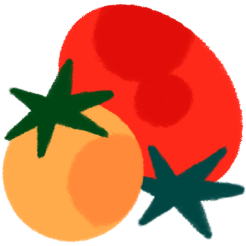
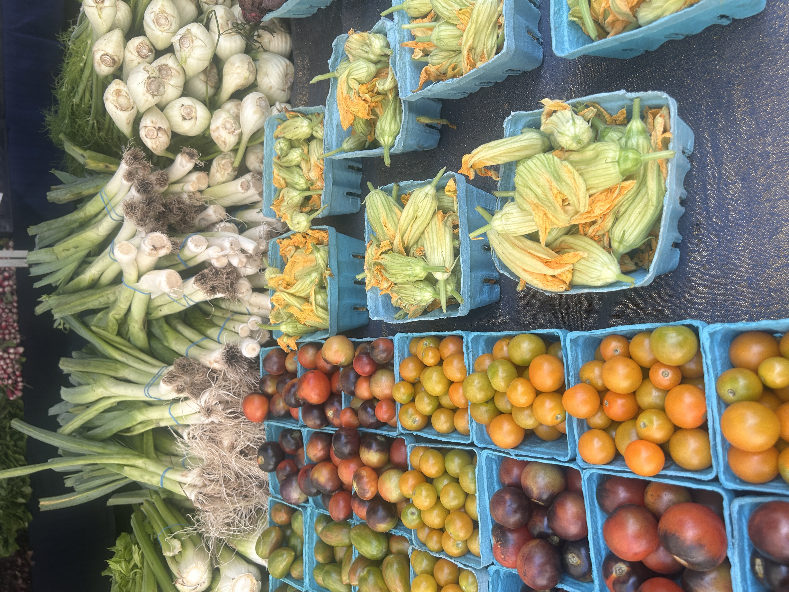
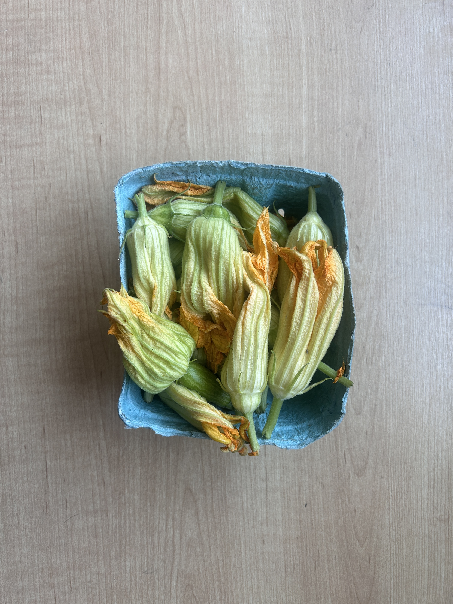

while walking through union square, the vibrant colors of the produce caught my eye so i spent some time to shop around! after a bit of deliberation, i decided to buy zucchini blossoms since i had a surplus of ricotta.

colorful veggies
my purchase